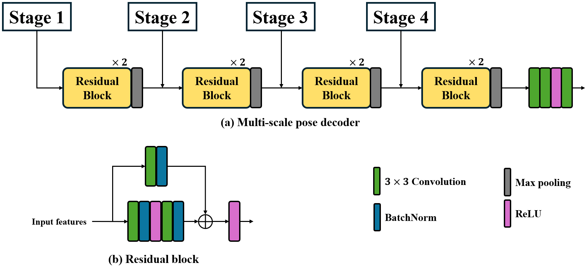

Abstract
Autonomous driving is one of the most promising yet challenging areas in technology today. A fully autonomous system has the potential to revolutionize road traffic by enhancing safety and efficiency through the reduction of human errors and congestion. One critical challenge in achieving this is accurate steering angle estimation, which directly affects a vehicle's ability to navigate and maintain control. Recent advances in deep learning have enabled the estimation of steering angles directly from raw camera data. However, limited navigation data can lead to suboptimal feature learning. To address this, we propose a shared encoder trained on multiple computer vision tasks critical for urban navigation, such as depth, pose, and 3D scene flow estimation, as well as semantic, instance, panoptic, and motion segmentation. By incorporating diverse visual information used by humans during navigation, this unified encoder may enhance steering angle estimation. To achieve effective multi-task learning within a single encoder, we introduce a multi-scale feature network for pose estimation to improve depth learning. Additionally, we employ knowledge distillation from a multi-backbone model pretrained on these tasks to stabilize training and boost performance. Our findings demonstrate that a shared backbone trained on diverse visual tasks significantly improves steering angle estimation, underscoring the potential of integrating human-like perception into autonomous driving systems.
Model architecture
Model overview

Encoder architecture details

Pose decoder architecture details
Depth decoder architecture details